Alternating Current Motors
4
Learning Outcome
When you complete this learning material, you will be able to:
Explain the construction and operating principles of AC motors.
Learning Objectives
You will specifically be able to complete the following tasks:
- 1. Describe the principle of a pulsating magnetic field for single-phase AC motors and rotating magnetic field for three-phase AC motors. Describe general rotor and stator construction.
- 2. Describe the torque/speed characteristics of induction motors and the relationship between torque, slip and rotor speed.
- 3. Define full-load amps, locked rotor amps, service factor amps.
- 4. Describe the principles, applications, and operation of wound rotor motors.
- 5. Describe the principles, applications, and operation of single-phase AC motors. Include universal, shaded-pole, split-phase, capacitance-start, repulsion-start, and reluctance-start.
- 6. Describe the principles, applications, starting methods and operation of a synchronous motor.
Objective 1
Describe the principle of a pulsating magnetic field for single-phase AC motors and rotating magnetic field for three-phase AC motors. Describe general rotor and stator construction.
INTRODUCTION
AC motors can be broken into two broad classifications: single-phase motors and three-phase motors.
Three-phase motors are relatively simple to construct and are rugged and efficient. They are the motors of choice for industry since three-phase power is readily available. Single-phase power is most common in residences, but often only single-phase power is available in commercial and institutional buildings as well. For this reason, single-phase motors are the most common motors in use today.
SINGLE-PHASE PULSATING STATOR FIELD
Consider the simple permanent magnet rotor shown in Fig. 1. An AC voltage is applied to the stator winding and the rotor is a permanent magnet. The north pole of the magnet is completely aligned with the north pole of the stator winding. The same applies with the south poles. We know from the forces of magnetism that the two forces will repel each other, but since they are \( 180^\circ \) opposed to each other, the rotor will not turn. If the rotor is turned slightly in the clockwise direction, the rotor will continue to rotate in that direction.
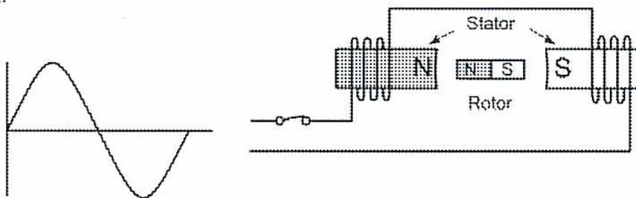
The diagram illustrates a single-phase AC motor. On the left, a graph shows a sinusoidal AC voltage waveform. The main part of the diagram shows a stator with two windings, labeled 'N' (North) and 'S' (South). A permanent magnet rotor, also labeled 'N' and 'S', is positioned between the stator windings. The rotor is connected to a switch and a DC voltage source. The stator windings are connected to the AC voltage source.
Figure 1
Permanent Magnet
Now consider the sequence shown in Fig. 2.
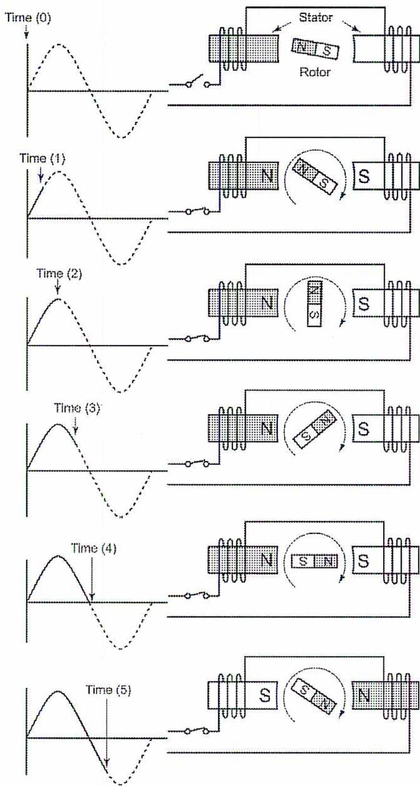
The figure illustrates the operation of a single-phase motor over six time intervals, showing the relationship between the AC current waveform and the resulting magnetic field orientation.
- Time (0): The current waveform is at the zero-crossing point, transitioning from negative to positive. The stator windings are energized such that the left winding is a North (N) pole and the right is a South (S) pole. The rotor bar magnet is initially positioned horizontally with its North pole facing the left stator pole.
- Time (1): The current is at a positive peak. The magnetic field polarity remains the same (N on the left, S on the right). The rotor has begun to rotate clockwise.
- Time (2): The current is returning towards zero. The rotor continues its clockwise rotation.
- Time (3): The current has reversed direction and is at a negative peak. The magnetic field polarity has reversed, with the South (S) pole on the left and the North (N) pole on the right. The rotor continues clockwise rotation.
- Time (4): The current is returning towards zero from the negative peak. The rotor continues clockwise rotation.
- Time (5): The current is at a positive peak again, returning to the initial field polarity (N on the left, S on the right). The rotor is now positioned horizontally with its South pole facing the left stator pole.
Figure 2
Pulsating Magnetic Field for Single-Phase Motors
-
Time 0 The control switch is open. There is no current flow through the stator poles.
Note: The permanent magnet is not physically lined up with the stator poles. - Time 1 When the start switch is closed, current flows through the stator windings. Current flow sets up north and south poles. The north stator pole repels the north pole and the south stator pole repels the south pole of the magnet.
- Time 2 AC voltage increases towards its positive maximum. Rotation continues in the clockwise direction.
- Time 3 AC voltage reaches its maximum. The north pole of the permanent magnet is furthest away from the north pole of the stator. The forces of repulsion are the weakest at this point but the inertia of rotor continues to rotate it in the clockwise direction.
- Time 4 The forces of attraction now take over. The north pole of the rotor is now attracted to the south pole of the stator. Similarly, the south pole of the rotor is attracted to the north pole of the stator.
- Time 5 AC voltage changes to negative. The applied voltage now increases in the negative direction. The change in polarity of the applied voltage changes the orientation of the stator poles. The forces of repulsion again take over, but the rotor continues in the clockwise direction.
The stator magnetic field for a single-phase applied voltage motor, changes polarity every \( \frac{1}{2} \) cycle. The magnetic field pulsates in strength and polarity but continues to rotate the rotor in the clockwise direction as shown in Fig. 2.
The rotor for this 2-pole machine with 60 Hz applied voltage turns at the synchronous speed of 1800 r/min.
$$ \text{Speed} = \frac{\text{frequency} \times 60}{\text{number of polepairs}} $$
$$ \text{Speed} = \frac{60 \text{ Hz} \times 60}{2} $$
$$ \text{Speed} = \frac{3600}{2} $$
$$ \text{Speed} = 1800 \text{ r/min} $$
Single-phase motors may not start unless the rotor field is slightly misaligned with the stator field. Later in this module, techniques for starting single-phase induction motors will be discussed. We will also discover that three-phase motors do not need such starting techniques.
Squirrel-cage Rotor
Permanent magnet rotors do not provide the torque necessary for most applications. A coil of wire can be used as a rotor instead of a magnet as shown in Fig. 3(a). As the applied single-phase AC voltage builds up, so does the strength of the stator field. The magnetic field cuts through the conductor. This action induces an electromagnetic force (emf) in the rotor coil which causes a current to flow in the closed loop. The amount of current depends on the resistance of the coil of wire. The current flowing in the rotor sets up a magnetic field that opposes the stator field. This principle of induction produces the torque that causes the rotor to turn. Most AC motors are called AC induction motors.
The left-hand rule can be used to determine the relationship of the motion of the conductor in a magnetic field to the direction of the induced current. The forefinger points in the direction of the field flux (north to south). More torque can be produced by adding more coils to the rotor as shown in Fig. 3(b). The thumb points in the direction of thrust, or movement, of the conductor. The centre finger points in the direction of the current induced into the armature. See Fig. 3(c).
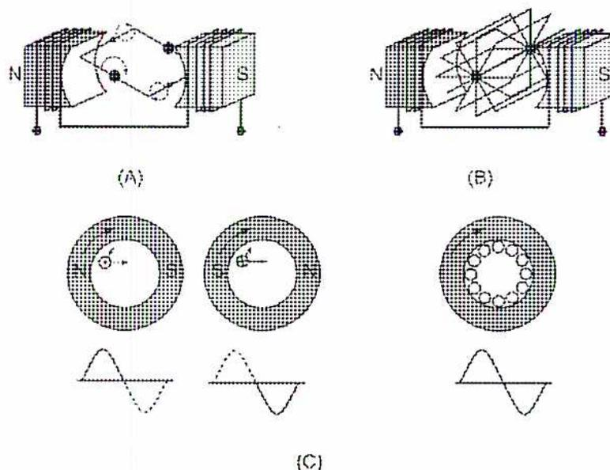
Figure 3 consists of three parts labeled (A), (B), and (C). Part (A) shows a single rectangular coil rotor positioned between a North (N) pole on the left and a South (S) pole on the right. Below the coil is a sine wave graph. Part (B) shows a rotor with multiple coils (represented by a mesh) between N and S poles, with a sine wave graph below. Part (C) shows a cross-sectional view of a squirrel-cage rotor, consisting of a ring of bars connected by end rings, with a sine wave graph below it.
Figure 3
Induction Forces
Fig. 4(a) shows the rotor arrangement found in most AC induction motors and commonly called the squirrel cage. Copper or aluminum bars are held in place by end rings. The end rings (also called shorting rings) allow the induced currents to flow through the rotor bars.
The rotor core is made up of steel laminations and is shown in Fig. 4(b). Each lamination is varnished to reduce magnetic losses such as eddy currents and hysteresis.
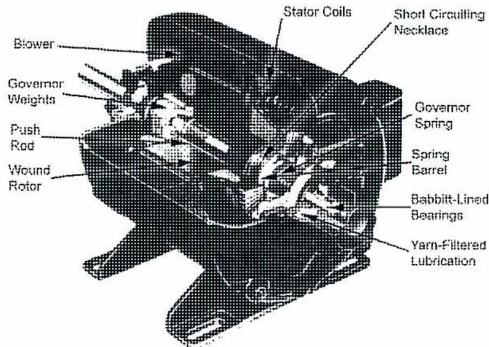
Figure 4 consists of two diagrams, (A) and (B), illustrating the components of a squirrel-cage rotor. Diagram (A) shows a cylindrical structure composed of parallel 'Rotor Bars' connected at both ends by 'End Rings'. Diagram (B) shows a similar cylindrical structure mounted on a central 'Shaft', with the cylinder composed of many thin 'Rotor Laminations'.
Figure 4
Squirrel-cage Rotor
THREE-PHASE ROTATING STATOR FIELD
A three-phase stator arrangement can be thought of as three single-phase pole-pairs that are physically placed 120 degrees apart. The voltage between each phase is separated by 120 electrical degrees.
Fig. 5 shows a 2-pole stator arrangement with windings connected in a delta configuration. The squirrel-cage rotor bars are also shown.
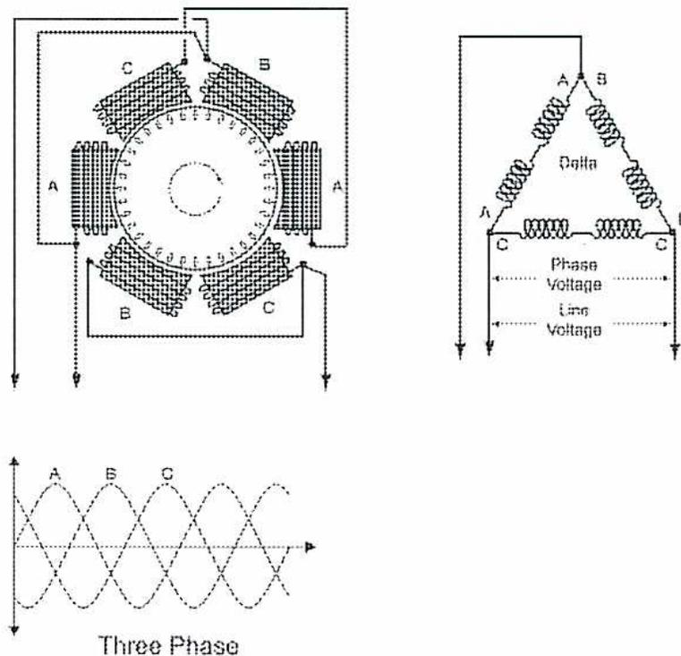
Figure 5 illustrates a three-phase stator arrangement. The top-left diagram shows a cross-section of a stator with six winding poles labeled A, B, C, A, B, C in a circular pattern around a central rotor. The top-right diagram is a schematic of a Delta connection, showing three inductor coils arranged in a triangle with vertices labeled A, B, and C. It includes labels for 'Phase Voltage' across one coil and 'Line Voltage' between two lines. The bottom diagram is a waveform graph showing three overlapping sine waves labeled A, B, and C, representing the 'Three Phase' electrical signals.
Figure 5
Three-Phase Stator Arrangement
The applied voltage, applied current, induced voltage, induced current, stator magnetic field, and rotor magnetic field are all constantly changing with time, but it is a good exercise to consider what takes place instantaneously. Consider the time when the current in phase A is zero, the current in phase B is negative, and the current in phase C is positive. This establishes poles in windings B and C as shown in Fig. 6.
Magnetic lines of flux are established between north and south-pole pairs. The resultant magnetic field is also shown in Fig. 6.
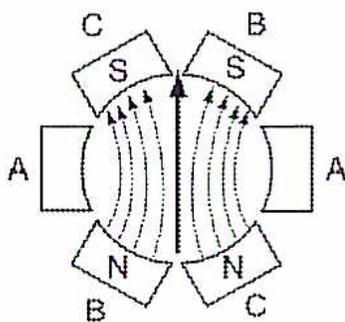
Figure 6
Resultant Magnetic Field
Fig. 7 traces the resultant rotating magnetic field through 360 electrical degrees which is equivalent to one revolution of the rotor. Note how the resultant magnetic field rotates.
![A composite figure illustrating the rotating magnetic field. The top and bottom sections show eight diagrams of the stator at 45-degree intervals (0, 45, 90, 135, 180, 225, 270, 315 degrees), showing the shifting of magnetic poles. The middle section is a graph of three sinusoidal current waveforms (A, B, and C) plotted against electrical angle, showing their phase relationships. Vertical dashed lines connect the peak and zero-crossing points of the current waveforms to the corresponding stator diagrams above and below.](7ff005f9556dc6518981bb92091d36ab_img.jpg)
Figure 7
Three-Phase Rotating Stator Field
The expanding and collapsing stator magnetic field induces currents in the rotor that interact with the stator field and cause rotation. The three-phase rotating field is used in three-phase induction motors. The rotating magnetic field induces current in the squirrel-cage rotor. Again, the forces of repulsion and attraction cause the rotor to turn. Three-phase motors do not need any special means to start them.
ROTOR AND STATOR CONSTRUCTION
The basic components of an A.C motor are the:
- • rotor
- • stator
Rotor
The complete rotor assembly (Fig. 8) consists of a shaft, bearings, laminated iron core and rotor bars. The squirrel-cage rotor is laminated with slots embedded in its surface. Copper or aluminum rotor bars are pressed or cast into the slots. The bars are welded or bolted to the end rings. The rotor bars are usually angled (skewed) along the body of the rotor. This ensures that a smooth and steady acceleration is produced while the motor is started.
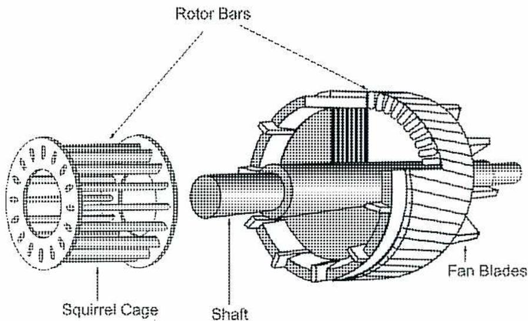
The diagram illustrates the components of a rotor assembly. On the left, a cross-sectional view of the rotor shows the 'Squirrel Cage' structure, which consists of longitudinal bars connected by end rings. On the right, a perspective view shows the 'Shaft' at the center, the 'Rotor Bars' embedded in the outer core, and the 'Fan Blades' attached to the rear for cooling.
Figure 8
Rotor Assembly of an AC Induction Motor
Stator
The stator core (Fig. 9) is made from laminated sheets of steel. Slots are embedded in the inner surface. The stator windings are evenly wound within these slots. After the coils are set into the slots, the entire stator assembly is coated with varnish or epoxy resin. This helps to hold the stator winding to the core and prevents moisture from attacking the insulation.
The air gap between the rotor and stator is kept to a minimum. Air is a poor conductor of magnetic flux. Air gaps range from 1.25 mm in small motors to 2.5 mm or more in large motors.
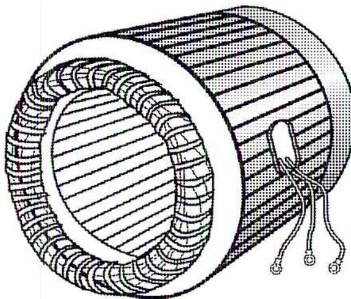
Figure 9
Stator Assembly of the AC Induction Motor
(Courtesy of Windings Inc. USA)
Three-phase power naturally creates a rotating magnetic field, but single-phase power creates a pulsating magnetic field. Both power sources create magnetic fields in the stator that induce magnetic fields in the rotor. The forces of attraction of unlike magnetic poles and repulsion of like poles are used to start and run AC motors.
Single-phase motors are generally more complicated in construction and are not as efficient as three-phase motors, but they are well suited for some applications.
Objective 2
Describe the torque/speed characteristics of induction motors and the relationship between torque, slip and rotor speed.
MOTOR SPEED, SLIP, AND TORQUE
The speed of AC motors depends on the frequency of the applied voltage and the number of poles wound on the stator. Increase the frequency and the motor will turn faster. Increase the number of poles and the motor will turn slower.
There must be relative motion between the pulsating or rotating magnetic field and the rotor conductors for induction to take place. In other words, the speed at which the stator field is rotating (or pulsating) must be greater than the speed of the rotor. Without induction the motor will not work.
As the rotor speed approaches the stator speed, the rate at which the stator field cuts through the rotor conductors decreases. This means less current is induced in the rotor bar, and that there is less interaction of the rotor and stator magnetic fields. Therefore, less torque is produced. The rotor speed never reaches synchronous speed because at that speed no current flows in the rotor conductors and, therefore, no torque is produced.
The difference between synchronous speed and rotor speed is called the slip speed. Slip speed is usually expressed as a percentage of synchronous speed.
$$ \% \text{ slip} = \frac{\text{synchronous speed} - \text{actual speed}}{\text{synchronous speed}} \times 100 $$
Slip depends on motor load. As load increases, speed decreases and torque increases. Squirrel-cage motors are usually manufactured with slip ranging from 5% - 20%.
Example 1
A 2-pole motor operated at 60 Hz has a synchronous speed of 3600 r/min. If the rotor speed at full load is 3420 r/min, calculate the % slip.
Answer
$$ \% \text{ slip} = \frac{\text{synchronous speed} - \text{actual speed}}{\text{synchronous speed}} \times 100 $$
$$ \% \text{ slip} = \frac{3600 - 3420}{3600} \times 100 $$
$$ \% \text{ slip} = \frac{180}{3600} \times 100 $$
$$ \% \text{ slip} = 0.05 \times 100 $$
$$ \% \text{ slip} = 5\% \text{ (Ans.)} $$
Torque
Torque of an electrical motor can be thought of as its ability to work against a load. The interaction of the rotor field and the stator field produces a force that causes rotation. The force and radius of the rotor determine the torque that is produced on the shaft of the motor. The force depends on the:
- • resultant flux density in the air gap between the rotor and the stator
- • resistance of the rotor bars
- • length of the rotor bars
A motor can have different torque characteristics depending on the resistance of the rotor bars and the inductive reactance of the rotor. The impedance of the rotor affects the amount of induced current that flows in the rotor and the phase angle between the rotor current and induced voltage. The phase angle, or rotor power factor, is important to the amount of torque that is produced when the motor is first started and when it is running at rated speed.
For example, there is considerable inductance in the rotor circuit because a laminated core surrounds the rotor bars. Inductance depends on frequency. Therefore, the inductive reactance is greater when the motor first starts because the slip is the greatest. As the motor speeds up, inductance is reduced because slip and the frequency of the induced emf is reduced. When the motor is first started, inductive reactance is much higher than the resistance. This results in a low lagging rotor power factor and low starting torque. Starting torque can be increased by adding resistance to the rotor circuit.
The size, shape, material, and depth (shallow or deep) of the rotor bars all affect resistance and reactance in the rotor. For example, the depth of the rotor bars refers to the effective distance these bars are from the stator field. The deeper the bar, the less the magnetic penetration from the stator and the less current induced in the bar. When the motor is first started, the inductance is high and magnetic penetration is shallow. When the motor comes up to speed, inductance is reduced and magnetic penetration is deeper.
The rotor of the deep-bar design (Fig. 10) employs heavy cross-section copper rectangular bars. During initial starting, the induced current flows toward the top of the bar, which increases the effective resistance.
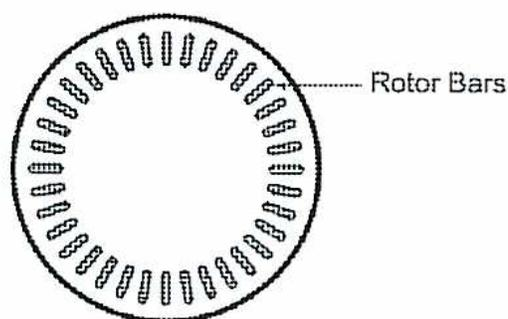
Figure 10
Standard Torque Deep Rotor Bars
The rotor of the double squirrel-cage (Fig. 11) carries two completely separate bars and end rings. The bars and end rings are made of copper and copper alloy. The outer bars are specially designed to have high resistance to permit a high starting torque with low starting current. When the rotor speed increases, the frequency drops and the impedance of the inner bars decreases. Greater magnetic penetration occurs and most of the current flows in the bottom bars.
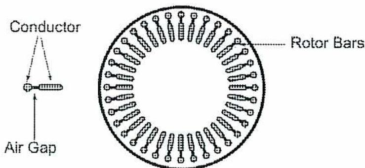
Figure 11
High Torque Double Squirrel-Cage Rotor Bars
Fig. 12 shows a speed/torque curve for an AC induction motor in which 100% torque, or full-load torque , is achieved at slightly below 100% speed (i.e. synchronous speed).
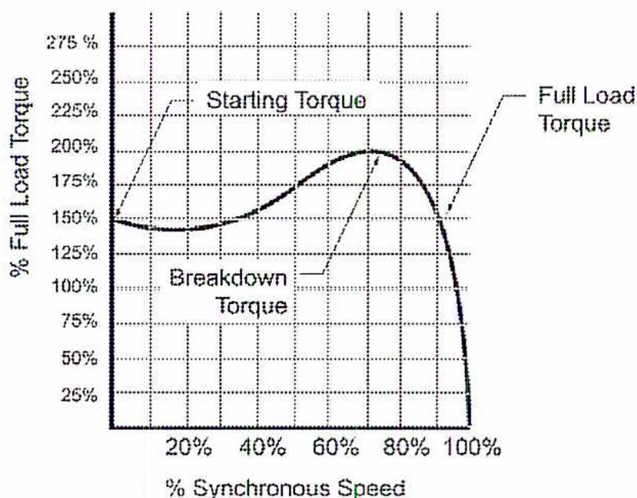
| % Synchronous Speed | % Full Load Torque | Label |
|---|---|---|
| 0% | 150% | Starting Torque |
| ~70% | ~200% | Breakdown Torque |
| 100% | 100% | Full Load Torque |
Figure 12
Speed/Torque for an AC Induction Motor
If the rotor of the motor is held stationary and full voltage is applied, 150% of normal full-load torque is available. These are also the same conditions that apply when starting a motor connected to its load. This is known as locked rotor torque or starting torque .
The characteristics for this motor show that it can be loaded to over 200% of normal torque before any substantial speed change occurs. If the motor is loaded further, its speed will quickly reduce and eventually stop. The point where this occurs is called breakdown torque or pull-out torque .
It is important to match a motor's characteristics with the characteristics of its load. The load characteristics of a fan, centrifugal pump, reciprocating compressor, conveyor, or a grinder differ greatly. A motor must be able to start and operate at rated speed. Motor designers can vary rotor resistance and reactance so that the phase angle between the rotor current and rotor voltage results in more torque or less torque.
Objective 3
Define full-load amps, locked rotor amps and service factor amps.
FULL-LOAD AMPS
The amount of current the motor draw under full-load (torque) conditions is called full-load amps (FLA). It is also known as nameplate amps because this is the figure that appears on the nameplate of the motor.
LOCKED ROTOR AMPS
The amount of current an electric motor draws under starting conditions when full voltage is applied is called locked rotor amps. It is sometimes called inrush current . This can be as much as 600% percent of the full-load amps.
SERVICE FACTOR AMPS
Service factor is given on the nameplate of the motor. This is a rating above full-load amps at which the motor can safely operate. For example, many motors have a service factor of 1.15, which means the motor can handle 115% of its full-load current.
Most motors are started “across the line” which means full voltage is applied to the stator windings. This can be a problem for some motors when they are started under full load.
The electrical codes that govern the installation of electrical motors state that the motor and the supply wiring must be protected by an overcurrent device such as a fuse or a circuit breaker. These devices automatically disconnect the supply voltage from the motor if the motor draws excessive current. In most cases, these devices tolerate the inrush current for a short period of time. If the current remains at an unsafe level for too long, the overcurrent device will operate. For some motors, the supply voltage must be reduced to allow the motor to start and then increased to full-load level. Apparatus called reduced voltage starters are used in these applications. The wound rotor is one technique of reduced voltage starting.
Objective 4
Describe the principles, applications, and operation of wound rotor motors.
WOUND ROTOR MOTORS
Another technique to vary rotor resistance is the wound rotor. This type of construction is used when some control of the motor speed is required and when more starting torque is required.
Fig. 13 shows assembled three-phase wound rotors. The windings are brought out to slip rings and brushes, which are connected to an external resistor control. The control allows speed and torque to be varied.
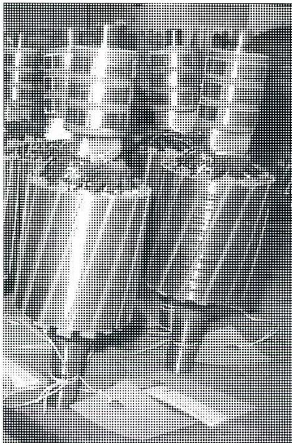
A black and white photograph showing a close-up of a wound rotor motor. The rotor is a large, cylindrical component with a series of parallel bars or windings visible on its surface. At one end of the rotor, there are three distinct circular slip rings. Brushes are in contact with these slip rings, and wires extend from the brushes, presumably connecting them to an external control circuit. The stator of the motor is visible in the background, showing a series of slots and windings. The entire assembly is mounted on a dark, possibly metallic, base.
Figure 13
Wound Rotor
(Courtesy of Windings Inc. USA)
Fig. 14 shows a wiring diagram for wound rotor control.
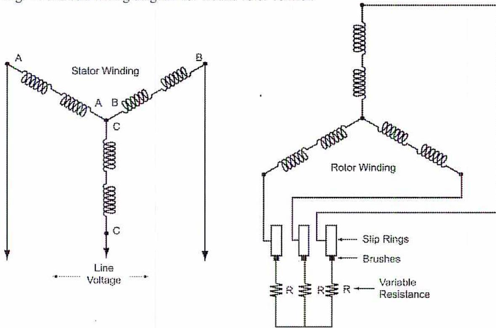
Figure 14
Wiring Diagram for Wound Rotor
Fig. 15 shows the typical torque and current curves for a wound rotor motor.
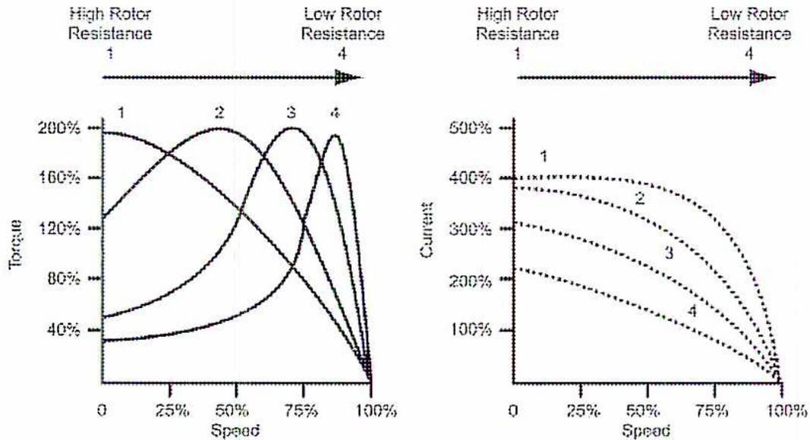
The figure contains two graphs. The left graph plots Torque (Y-axis, 0 to 200%) against Speed (X-axis, 0 to 100%). It shows four curves for different rotor resistances: 1 (High Rotor Resistance), 2, 3, and 4 (Low Rotor Resistance). As resistance increases, the peak torque shifts to lower speeds. The right graph plots Current (Y-axis, 0 to 500%) against Speed (X-axis, 0 to 100%) for the same four rotor resistances. The curves show that higher rotor resistance results in lower current at any given speed.
Figure 15
Typical Torque and Current for Wound Rotor Motors
Applications include: chippers, cranes, hoists, conveyors, blowers, and fans.
Objective 5
Describe the principles, applications, and operation of single phase AC motor. Include universal, shaded-pole, split-phase, capacitance-start, repulsion-start and reluctance-start.
SINGLE-PHASE AC MOTORS
The following are types of single phase AC motors:
- • universal motor
- • shaded-pole
- • split-phase
- • capacitance-start
- • repulsion-start
- • reluctance-start
Universal Motors
The universal (series) motor works well connected to a DC or AC source. Fig. 16 shows a simple diagram of a series motor. Note that the armature winding is in series with the field winding.
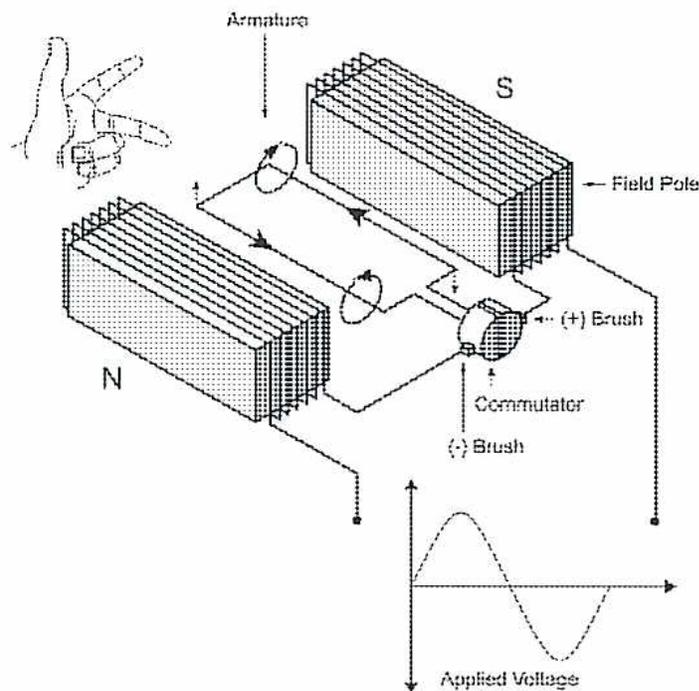
The diagram illustrates a simple universal motor. It features a central armature (rotor) with a winding, positioned between a North (N) field pole on the left and a South (S) field pole on the right. The armature is connected to a commutator, which in turn is connected to two brushes: a positive (+) brush and a negative (-) brush. These brushes are connected to an AC voltage source, represented by a sine wave graph labeled 'Applied Voltage'. A hand is shown on the left, applying the left-hand rule to the armature winding. Arrows indicate the direction of current flow and the resulting magnetic forces.
Figure 16
Simple Universal Motor & Left-hand rule
Consider the positive half of the AC current flowing through the windings:
- • Current flow is from positive to negative
- • Current through the field windings establishes the main field flux. The direction of the magnetic field is from north to south.
- • Current flows through the positive brush, commutator, one segment of the armature winding, the commutator, and the negative brush
- • Current through the armature also establishes a magnetic field that interacts with the main field
- • Using the left-hand rule, the interaction of the two fields establishes a torque that causes the armature to turn in the clockwise direction
When the AC current changes to negative, the direction of the:
- • main field poles change
- • armature field changes
Therefore, the direction of the torque does not change, and the armature continues to rotate in the same direction.
Fig. 17 shows a more practical field and armature arrangement for a series motor.
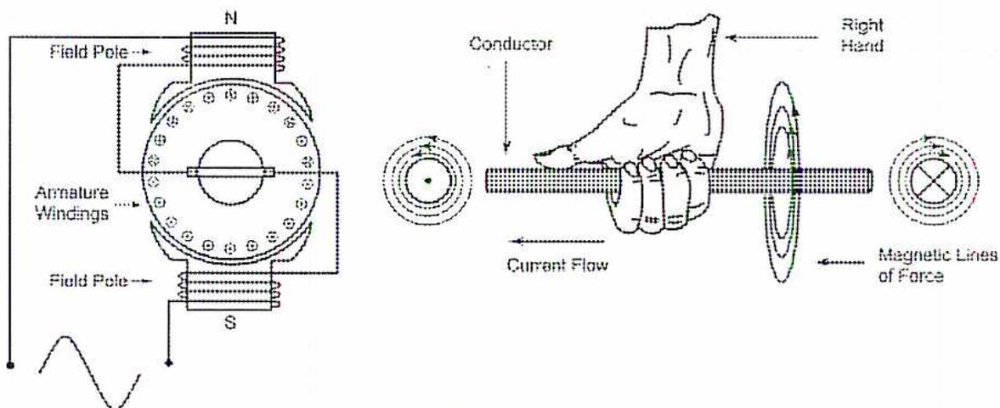
The diagram illustrates the internal structure of a series motor. On the left, a cross-sectional view shows the stator with 'Field Pole' windings connected in series with the 'Armature Windings'. The poles are labeled 'N' (North) at the top and 'S' (South) at the bottom. An AC voltage source is connected to the series combination. On the right, a 3D perspective shows a 'Conductor' (armature winding) with 'Current Flow' indicated by a downward arrow. A 'Right Hand' is shown gripping the conductor, with the thumb pointing in the direction of current flow. Concentric circles around the conductor represent 'Magnetic Lines of Force'. Arrows indicate the clockwise rotation of the armature.
Figure 17
Series (Universal) Motor & Right-hand rule
Small universal series motors operate equally well on AC or DC up to 60Hz. Different design techniques are used on larger AC series motors because hysteresis and eddy current losses increase with frequency and current. For example, the armature core is laminated to reduce magnetic losses. Compensating windings are also used on larger motors.
The laminations are punched from steel with superior magnetic properties. This material is often called electrical steel . Each steel lamination is insulated from the next by a thin coat of lacquer. Fig. 18 shows typical laminations for the stator and rotor of a series motor.
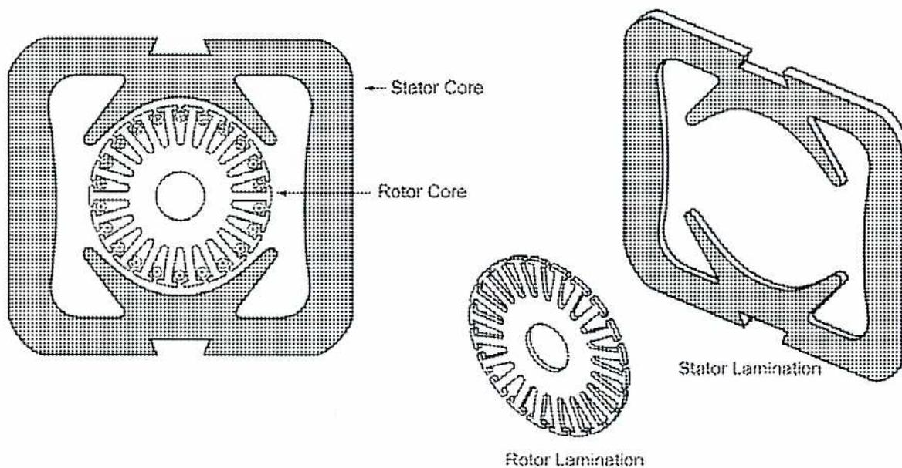
Figure 18
Rotor and Stator Laminations
Universal motors (Fig. 19) are used for vacuum cleaners, portable drills, hand tools, and sewing machines. Universal motors operate at speeds between 3500 r/min and 20,000 r/min. Starting torque is high and speed decreases with load.
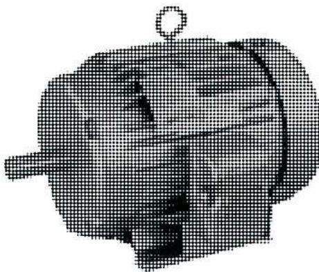
Figure 19
Universal (Series) Motor
At no load, the speed can be quite high. As a result, electronic or variable resistance speed controls are often employed. Fig. 20 shows a typical speed/torque relationship for a universal motor.
![Figure 20: Universal Motor Speed/Torque Relationship. A line graph showing the relationship between % of Rated Speed (Y-axis, 0 to 160) and % of Rated Torque (X-axis, 0 to 400). Two curves are plotted: DC and AC. Both curves start at approximately 145% speed at 0 torque. The DC curve decreases more gradually than the AC curve. At 100% torque, both are at 100% speed. At 200% torque, the DC curve is at approximately 75% speed, while the AC curve is at 50% speed. At 300% torque, the DC curve is at approximately 55% speed, and the AC curve is at 25% speed. At 400% torque, the DC curve is at approximately 40% speed, and the AC curve is at 0% speed.](60e9207be66a64332619bb4b667fe67b_img.jpg)
| % of Rated Torque | DC % of Rated Speed | AC % of Rated Speed |
|---|---|---|
| 0 | 145 | 145 |
| 100 | 100 | 100 |
| 200 | 75 | 50 |
| 300 | 55 | 25 |
| 400 | 40 | 0 |
Figure 20
Universal Motor Speed/Torque Relationship
The universal motor is not strictly classified as an induction motor because the stator field does not induce a current and subsequent magnetic field in the rotor.
Shaded-Pole Motors
The shaded-pole motor is a type of induction motor with a squirrel-cage rotor.
Fig. 21 shows an elementary diagram of one field pole of a shaded-pole motor. The diagram only shows one pole of the pole pair. Generally, the pole piece is notched and a heavy copper band is placed as shown in the diagram. This is called the shading coil or shading pole .
![Figure 21: Shading Pole. The top part shows three diagrams of a field pole at Time A, Time B, and Time C. Each diagram shows the main field coil, a shading pole, and the resulting magnetic flux lines. At Time A, the flux is concentrated on the left. At Time B, it's in the middle. At Time C, it's on the right. Arrows indicate the 'Sweeping Action' of the flux. The bottom part is a graph of 'Applied AC Voltage' vs 'Time', showing a sine wave with points A, B, and C marked on the rising and falling slopes.](0f79a59f3766fc341ff688a23692c1d9_img.jpg)
Figure 21
Shading Pole
The main magnetic field builds up as the applied AC current increases from zero to its positive maximum. Voltage increases significantly from zero to its value at Time A as shown in Fig. 21. The growth of the main field flux cuts through the shading coil, which induces a current and magnetic field in it that opposes the main field. The main field is distorted, resulting in a concentration of flux on the left side of the field pole.
At the time period just before and just after Time B, voltage does not change significantly. Very little current is induced in the shading pole during this time period, and the concentration of field flux is near the middle of the field pole.
The main field is collapsing between Time B and Time C. The greatest change of field flux occurs between Time C and the time where applied voltage reaches zero. The collapsing field causes a field in the shading coil that aids the main field flux. This concentrates the main field flux on the right side of the field pole.
The orientation of the coil produces a magnetic field that opposes the main field as it is building up and aids the main magnetic field as it is collapsing. The expanding and collapsing magnetic field produced from the applied AC voltage produces a sweeping effect across the pole face which causes the rotor to turn.
This sweeping effect also occurs on the other pole piece of the pole pair and results in rotation of the rotor in the same direction. If the motor has more than two poles, the sweeping effect occurs on all pole faces.
The field pole magnetic field changes direction when the applied AC voltage changes direction. However, so does the induced magnetic field in the rotor. This does not change the direction of rotation.
Shaded-pole motors cannot be reversed easily. The motor could be reversed if the stator poles were physically oriented in the opposite way. Some motors have two shading rings on each pole piece and the direction of rotation is selected by an external switch.
Shaded-pole motors are simple and inexpensive to manufacture. They are built in sizes from 3 W to 75 W and run at 10% to 25% of synchronous speed. They have low starting torque and poor efficiency.
Fig. 22 shows a photograph of a small shaded-pole motor. The shading coil is visible. Typical applications include small fans and clocks.
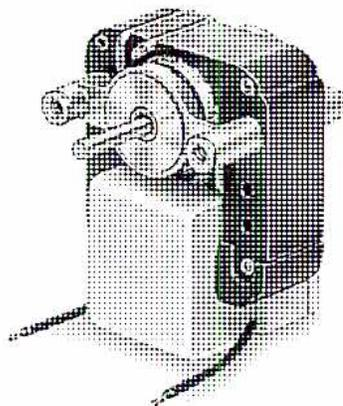
A black and white photograph of a small, rectangular shaded-pole motor. The motor is shown from a three-quarter perspective, revealing its internal components. The stator is visible on the left, and the rotor is on the right. A small fan is attached to the front of the rotor. Two wires extend from the bottom of the motor housing.
Figure 22
Shaded-pole Motor
Split-Phase Motors
Resistance/Inductance/Capacitance (RLC) circuit theory has been discussed in previous modules but a review of voltage/current relationships is given here.
- • Current and voltage are in phase (Fig. 23) if a circuit contains only resistance.
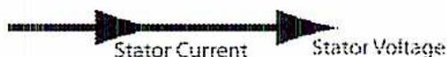
A diagram consisting of two horizontal arrows pointing to the right, stacked vertically. The top arrow is labeled "Stator Current" and the bottom arrow is labeled "Stator Voltage". Both arrows are of equal length and aligned, indicating they are in phase.
Figure 23
Current and Voltage in Phase
- • Current will lag voltage (Fig. 24) in a circuit that contains inductance or a combination of inductance and resistance.
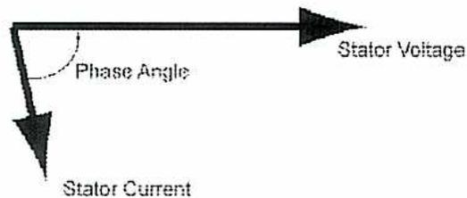
A phasor diagram showing two vectors originating from a common point. A horizontal vector pointing to the right is labeled "Stator Voltage". A second vector pointing downwards and to the left is labeled "Stator Current". The angle between the "Stator Voltage" vector and the "Stator Current" vector is labeled "Phase Angle".
Figure 24
Current Lags Voltage
- • Current will lead voltage (Fig. 25) in a circuit that contains capacitance or a combination of capacitance and resistance.
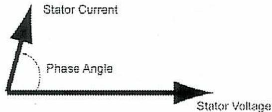
A phasor diagram showing two vectors originating from a common point. A horizontal vector pointing to the right is labeled "Stator Voltage". A second vector pointing upwards and to the left is labeled "Stator Current". The angle between the "Stator Voltage" vector and the "Stator Current" vector is labeled "Phase Angle".
Figure 25
Current Lead Voltage
This relationship between voltage and current in an inductive circuit is used to start and run the split-phase AC motors.
To start the motor, electrically, it is necessary to split the single-phase current that results from the AC applied voltage. This is accomplished by employing two windings on the stator core. These windings are called the start (auxiliary) winding and the run winding.
Fig. 26 shows an electrical diagram of the two windings.
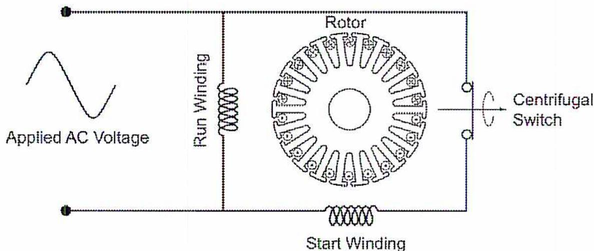
Figure 26
Wiring Diagram of a Split-phase Motor
This design makes the current in the start winding differ in phase from the current in the run winding. This is achieved by designing the two windings with different characteristics.
The run winding consists of a number of coils connected in series to form a set number of poles. This winding is wound with a heavier gauge wire to reduce its resistance. The coils of the run winding are embedded deep into the slots of the iron stator core to increase its inductance. It usually has more turns than the start winding. This causes the run winding current to lag the applied voltage by a considerable phase angle.
The start winding also consists of a number of coils connected in series to form the required number of poles. This winding is wound with a finer gauge wire which increases its resistance. The start coils are placed nearer the surface of the stator core slots which reduces the inductance of this winding. This causes the start current to be more in phase with the supply voltage than the run current in the run winding.
During the start period, both windings are connected in parallel across the applied voltage.
The windings are wound on separate sets of field poles, which are set 90 electrical degrees apart. This technique provides the initial torque to start the motor. Once the motor has been started and has reached approximately 75% of its rated speed, the start winding is no longer required. The start winding is disconnected from the stator circuit by means of a centrifugal cut-out mechanism. When the rotor reaches 75% of its rated speed, there is enough centrifugal force to open a disconnect switch. When the motor is stopped the disconnect switch is closed.
Fig. 27 shows a cutaway view of a single-phase induction motor with a centrifugal cut-out and Fig. 28 shows a detail of its centrifugal cut-out mechanism.
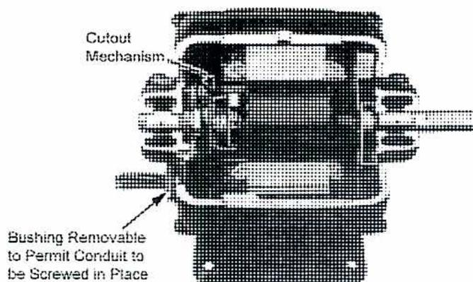
A cutaway illustration of a single-phase induction motor. The outer casing is partially removed to show the internal stator and rotor assembly. Two labels with arrows point to specific parts: "Cutout Mechanism" points to a component on the rear shaft, and "Bushing Removable to Permit Conduit to be Screwed in Place" points to a threaded fitting on the side of the motor housing.
Figure 27
Split-Phase Induction Motor
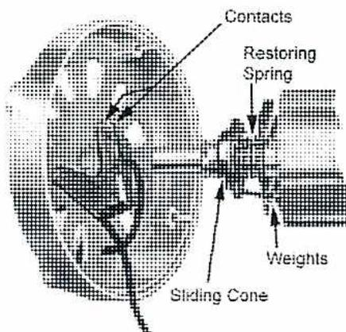
A detailed mechanical diagram of the centrifugal cut-out mechanism. It features a "Sliding Cone" mounted on a shaft. As the cone moves outward due to centrifugal force, it triggers a series of mechanical actions. "Weights" are shown on the cone's structure. A "Restoring Spring" is connected to the mechanism to pull it back when the motor stops. "Contacts" are shown being opened or closed by the movement of the cone and weights.
Figure 28
Centrifugal Cutout Mechanism
(Courtesy of Bodine Electric Company)
The starting torque of this type of motor is low and is used for easily started loads such as centrifugal pumps, woodworking tools and grinders that require a constant speed. Because of its low-starting torque, it is seldom used in sizes above 0.25 kW.
The starting torque of the split-phase motor is low. Fig. 29 shows typical speed/torque relationship for a split-phase motor.
![Figure 29: Speed/Torque for Split-phase Motors. A graph showing % of Rated Speed (Y-axis, 0 to 100) versus % of Rated Torque (X-axis, 0 to 500). Two curves are shown: 'Run Winding Only' (dashed line) and 'With Start Winding' (solid line). The 'Run Winding Only' curve starts at 0% torque and 0% speed, rising to 100% speed at approximately 150% torque. The 'With Start Winding' curve starts at 0% torque and 0% speed, rising to 100% speed at approximately 250% torque. Both curves show a sharp drop in speed as torque increases beyond their respective peaks.](e94f3bbb6f7501b9a1344dd0210e5dd8_img.jpg)
Figure 29
Speed/Torque for Split-phase Motors
Reversed by reversing the connection of any two leads of one winding (but not both) can reverse the direction of rotation. This changes the direction of rotation of the magnetic field in the stator.
Capacitor-Start Motors
The capacitor-start motor is very similar to the split-phase motor but uses a capacitor to achieve a phase angle between the start winding and the run winding. Fig. 30 shows an electrical diagram of a capacitor-start motor.
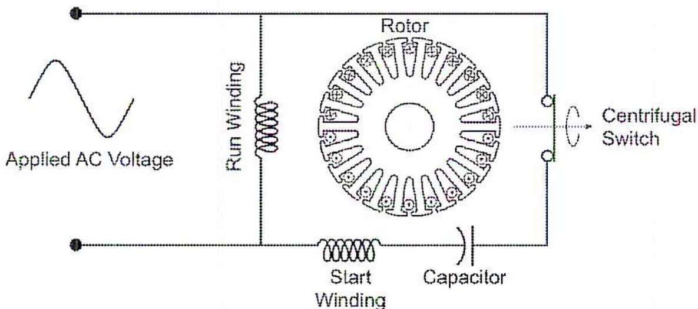
Figure 30
Wiring Diagram of a Capacitor-start Motor
The capacitor is usually mounted on top of the motor frame as shown in Fig. 31. This allows servicing of the capacitor.
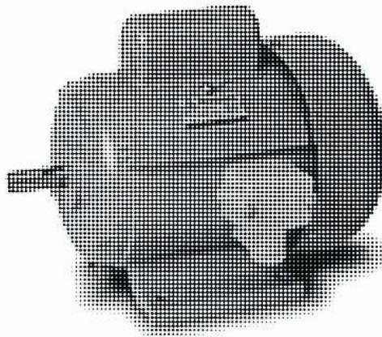
Figure 31
Capacitor-start Motor
The capacitors for hermetically sealed pumps are usually located in a control box that is separate from the motor.
The use of a capacitor in the run winding provides a greater phase angle than the split-winding arrangement. This results in greater starting torque. It provides more than double the starting torque with one third less starting current than the split-phase motor.
A centrifugal switch is used to cut out the capacitor and start winding once the motor has reached approximately 75% of its rated speed.
Fig. 32 shows speed/torque characteristics for capacitor-start motors.
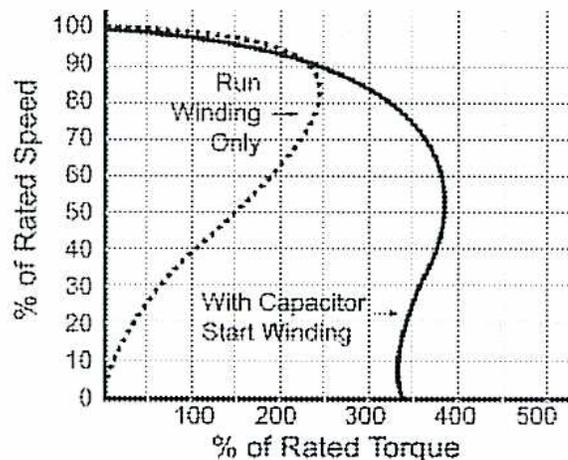
| % of Rated Torque | % of Rated Speed (Run Winding Only) | % of Rated Speed (With Capacitor Start Winding) |
|---|---|---|
| 0 | 0 | 0 |
| 100 | 40 | 95 |
| 200 | 60 | 90 |
| 300 | 80 | 85 |
| 350 | 85 | 50 |
| 400 | 90 | 0 |
| 500 | 95 | - |
Figure 32
Speed/Torque for Capacitor-Start Motors
Many appliances, such as washer and dryers, use capacitor-start motors. Domestic blower fans in furnaces also use capacitor start circuits for single-phase AC motors.
There is a variation of the capacitor-start motor called the capacitor-start capacitor-run motor. This motor has two windings called the main and auxiliary windings.
During starting, additional capacitance is connected in series with the auxiliary winding to provide the necessary phase displacement between the winding currents for maximum torque. The start capacitor is connected in parallel with the run capacitor.
When the rotor speed reaches about 75% of the rated speed, the centrifugal switch disconnects the start capacitor. The auxiliary winding remains in circuit during standard motor operation, and the run capacitor ensures the correct phase displacement between the two currents in the windings. This provides a constant strength rotating magnetic field.
The start capacitor may be rated for intermittent duty, but the run capacitor must be designed for a continuous rating.
Repulsion-Start Motors
Repulsion-start induction motors have the highest starting torque of all single-phase induction motors. The stator is single-phase AC, and the rotor is constructed like a DC motor armature with a centrifugally controlled mechanism to short-circuit the commutator when the motor speed approaches synchronous speed. When this happens the rotor becomes, in effect, a squirrel-cage rotor and the motor then operates as an induction motor.
During the startup and run, the brushes riding on the commutator are short-circuited. The resultant circulating currents in the armature produce magnetic poles which are offset from the stator poles. The effects are repulsion between these sets of poles, and rotation of the motor armature.
These motors may be built as repulsion-start or as straight repulsion motors, or as repulsion-induction motors. The high starting torque makes them suitable as drivers for compressors or reciprocating pumps.
The repulsion-induction motor has an additional squirrel-cage winding included on the rotor.
Fig. 33 shows a cutaway view of a fractional horsepower (hp) repulsion-start induction motor with brush-lifting mechanism.
Figure 33
Repulsion-start Motor
Reluctance-Start Motors
Magnetic reluctance is analogous to electrical resistance. It is defined as magnetic resistance, being equal to the ratio of magneto-motive force to magnetic flux. This motor is similar to the squirrel-cage induction motor. It is sometimes called a variable reluctance motor. The most common name for this type of motor is the switched reluctance motor or SR motor.
The rotor has teeth or notches cut into it to form salient poles, as shown in Fig. 34.
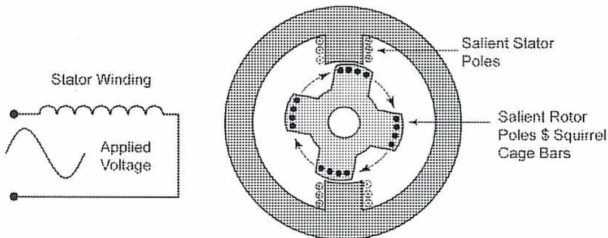
Figure 34
Single Phase Reluctance Motor Rotor
The stator is similar in construction to a split-phase motor and contains both a start and run winding.
When the stator is energized, the rotor moves into alignment with the stator pole, thereby minimizing the magnetic reluctance (hence the name variable reluctance). This is analogous to current in that it will always seek the path of least resistance.
The squirrel-cage design of the rotor makes this machine start as an induction motor. When the rotor reaches approximately 75% of synchronous speed, the start winding is open circuited by a centrifugal switch.
As the rotor approaches synchronous speed, the salient poles of the rotor are attracted by the salient poles of the stator. With light loading, the rotor pulls into synchronism with the rotating field flux. A salient-pole stator is shown in Fig. 35.
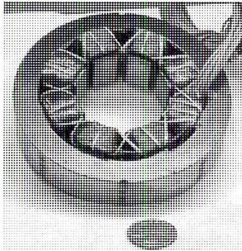
Figure 35
Salient-Pole Stator
(Courtesy of Windings Inc. USA)
This motor starts as an induction motor, locks into synchronism and continues to run at a constant synchronous speed.
The motor can be reversed by changing either the start winding or run winding connections (but not both).
More phases on the stator will reduce ripple in the output torque of the motor. The phases are connected to a single-phase supply. Electronic control equipment is required to switch when the phases are energized (hence the term switched reluctance motors). This is similar to electronic vs. mechanical commutation and requires precise timing. The switching of the phases of the stator creates the revolving magnetic field. With the appropriate switching of applied power to the stator coils, the rotor can be made to rotate at any desired speed and torque.
Fig. 36 shows three stator phases connected to a single-phase supply voltage.
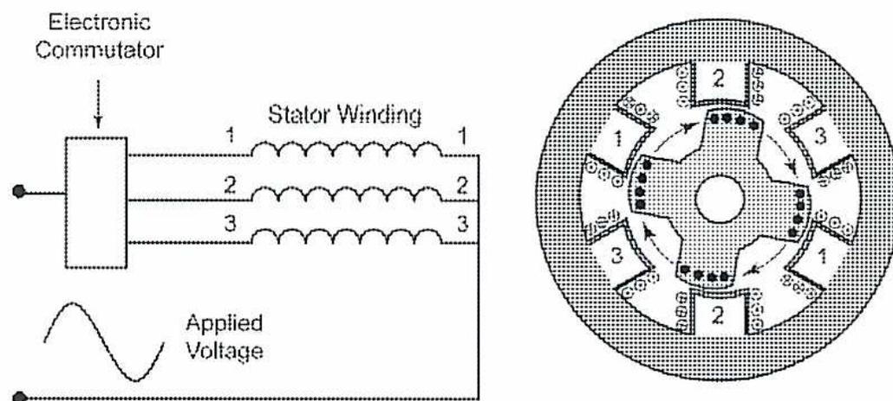
The diagram illustrates the components of a multi-phase reluctance motor. On the left, an 'Electronic Commutator' is shown as a rectangular block. It is connected to an 'Applied Voltage' source, represented by a sine wave symbol. The commutator has three output lines labeled 1, 2, and 3, which connect to the 'Stator Winding'. The stator winding is depicted as three separate coils, each with a series of loops, also labeled 1, 2, and 3. On the right, a circular cross-section of the motor shows the 'Rotor & Stator'. The stator is the outer ring with eight slots, each containing a coil. The rotor is the inner part with six salient poles. Arrows indicate a clockwise direction of rotation. The rotor poles are labeled 1, 2, and 3, corresponding to the phases of the stator winding.
Figure 36
Multi-phase Reluctance Motor Rotor & Stator
The reluctance motor has poor efficiency and a low power factor compared with a comparable size induction motor. Despite these disadvantages, reluctance motors are used in constant speed applications.
Objective 6
Describe the principles, applications, starting methods and operation of a synchronous motor.
SYNCHRONOUS MOTORS
The construction of a synchronous motor, except for slight modifications, is the same as the construction of a synchronous generator.
Principle of Operations
Synchronous motor differs from a conventional AC induction motor in that it operates without slip. In other words, it operates at synchronous speed. For example, a 4-pole synchronous motor operates at 1800 r/min, whereas a 4-pole induction motor, operating with 2.7% slip, turns at 1759 r/min.
The stator has conventional windings similar to an AC induction motor. A revolving field is created when AC voltage is applied to the stator. The field rotates at synchronous speed. This is shown in Fig. 37.
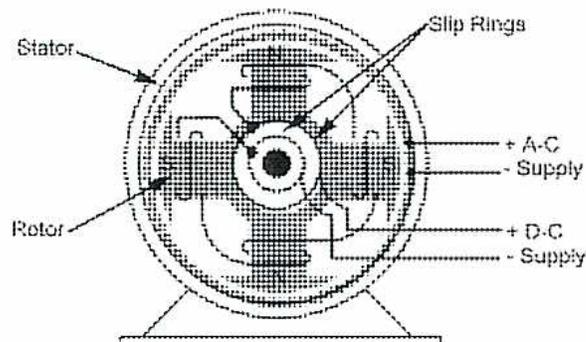
The diagram illustrates the internal structure of a synchronous motor. It features an outer stator with multiple windings and an inner rotor with salient poles. The rotor is connected to three slip rings on its shaft. An AC supply is connected to the stator windings, while a DC supply is connected to the rotor windings through the slip rings. Labels with leader lines identify the 'Stator', 'Rotor', 'Slip Rings', '+ A.C. Supply', and '+ D.C. Supply'.
Figure 37
Synchronous Motor
The rotor is usually wound on salient poles. A separate DC source is applied to the rotor poles through slip rings. This sets up permanent magnetic poles where the unlike poles lock into the synchronous speed of the rotating stator field from no-load to full-load. The speed of rotation of the field windings is controlled by the frequency of the AC power supply and the number of main stator poles.
Fig. 38 shows how the rotor is locked in position by the attractive force of the stator field. This motor has a permanent magnet, instead of the DC induced field. This type of synchronous motor is used only for light loads, such as clock motors. Larger synchronous motors used for heavy loads have the powerful magnetic poles produced by DC power.
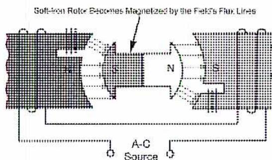
The diagram illustrates a basic synchronous motor. It features a stator with windings connected to an 'A-C Source'. A 'Soft-iron Rotor' is positioned between the stator windings. Magnetic flux lines are shown passing from the stator through the rotor, which is labeled 'Soft-iron Rotor Becomes Magnetized by the Field's Flux Lines'. The rotor is shown with North (N) and South (S) poles. The entire assembly is connected to an 'A-C Source' at the bottom.
Figure 38
Basic Synchronous Motor
The slip rings allow excitation of the salient poles to be changed by increasing or reducing the amount of current supplied to the rotor windings.
Construction
A synchronous motor is identical in construction to an alternator. Therefore, a synchronous motor has a stator and a rotor equipped with a slip ring and brush arrangement like an alternator. The construction of the rotor depends on how heavy a load the motor must drive and the operating speed. Most synchronous motors are built for low and moderate speeds. These rotors (Fig. 39) have salient poles which are wound on cores bolted to a heavy, cast steel spider ring with good magnetic properties.
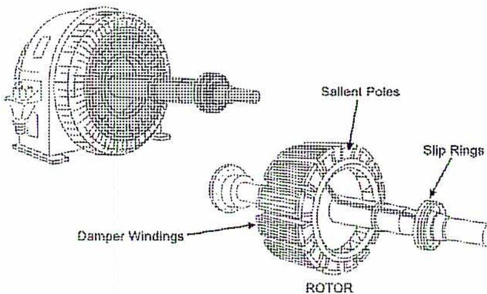
The diagram shows a 'ROTOR' assembly. It consists of a central spider ring with 'Salient Poles' bolted to it. The poles are wound with field windings. 'Damper Windings' are shown as bars embedded in the pole faces. 'Slip Rings' are mounted on the shaft, connected to the field windings. The rotor is shown in two views: a side view and a front view.
Figure 39
Synchronous Motor Rotor
High speed motors have their cores dovetailed and rigidly locked to the laminated steel spider ring.
Synchronous motors, which use damper windings for starting, have pole faces that are slotted to accept the copper bars of the damper structure. The bars, set in the slots, are all short-circuited together at each end by means of a conducting ring. The rotor windings are made of copper wire wound on each core. This allows bare wire to be exposed to air for cooling the structure.
Synchronous motor stators (Fig. 40) consist of a cast iron or welded steel frame which supports a slotted ring constructed of laminated soft steel. These laminations are insulated from each other and the slots are lined with a horn-fiber material. The stator winding coils are embedded into the open lined slots of the steel ring. The individually insulated coils are all alike and are interchangeable. When repairs are required, this type of construction allows for the easy removal and installation of new coils. Cooling air can circulate through the open-ended radial air duct in the spacing blocks of the stator. The magnetic poles in the stator are not discernable due to the fact that pole pieces are not used, as they are on the rotor. The magnetic polarities of the stator rotate to produce a rotating field. The poles exist at any instant in those coils which conduct the proper current. Because the current phases differ in the coils, the poles shift from coil to coil to follow the rise and fall phase shift from coil to coil. Therefore, the stator is said to have distributed poles .
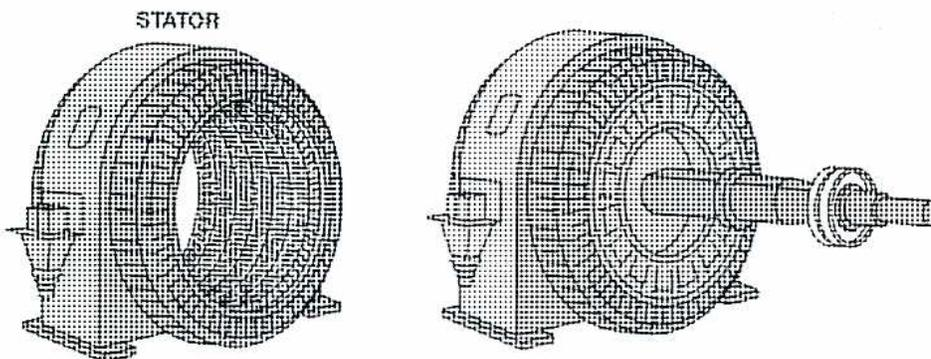
Figure 40
Synchronous Motor Stator
Starting Methods
Unlike the induction motor, the synchronous motor is not self-starting. It cannot be started with both normal AC and DC supplies connected to the stator and rotor windings respectively. Any attempt to do so would produce heavy stator currents, which would trip the machine off the line. These motors have to incorporate some type of starting device or system into their design. This is accomplished by using the following:
- • drive motor starters
- • damper windings
Drive Motor Starter
An external exciter motor (Fig. 41), AC or DC, is used to bring the synchronous motor rotor up to about 90% of its synchronous speed. The starting motor is then disconnected and the rotor locks in step with the rotating magnetic field of the stator. The motor continues to develop operating torque and runs at synchronous speed.
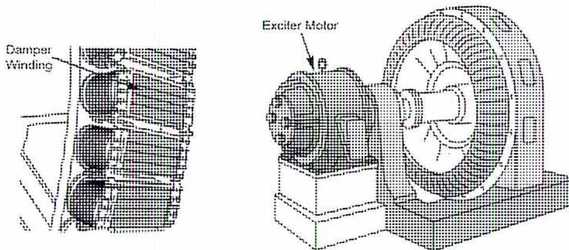
The image contains two diagrams. The left diagram is a cross-sectional view of a rotor pole face, showing a series of horizontal bars connected by end rings, labeled 'Damper Winding'. The right diagram shows a 3D perspective of a synchronous motor rotor assembly. A smaller 'Exciter Motor' is mounted on the left side of the rotor shaft. The rotor itself has a large diameter with multiple poles visible on its circumference.
Figure 41
Starting of Synchronous Motors
Damper Windings
Synchronous machines are supplied with a special squirrel-cage winding called a damper winding (Fig. 41) which is fitted into slots in the rotor pole faces. In a synchronous motor, this winding allows the machine to be started as an induction motor directly across the line. This is done without the DC excitation applied to the rotor and with the rotor winding short-circuited. As the motor accelerates as an induction motor and nears minimum slip, the rotor short circuit is removed and the rotor DC excitation is applied causing the rotor to “pull in” to synchronism.
The damper winding has another advantage whether the synchronous machine is run as an alternator or a motor. When the rotor is running at synchronous speed, there is no relative movement between the rotor bars and the flux of the rotating field so the damper winding has no effect. However, during sudden changes of load when the rotor tends to slow down or speed up, the damper winding becomes effective and supplies torque, which counteracts the tendency to change speed.
Applications
Synchronous motors are used in the following applications:
- • Where a constant speed is required such as milling tools
- • In industrial applications (generally three-phase units)
- • To drive DC generators
Power Factor Correction
Inductive loads, such as lightly loaded motors and magnetic lighting ballasts, cause the power factor to be less than 1.0 (unity). Capacitive reactance is often used to offset inductive reactance and thereby improve power factor. Over-excited synchronous motors can also be used to correct power factor.
It is a matter of the economics involved in any particular industrial application whether to use capacitors or synchronous motors to correct power factor. In most cases, the use of capacitors with induction motors provides the lowest capital cost and reduced maintenance cost. However, for some low r/min applications such as compressors, synchronous motors can be a cost-effective solution to power factor correction.
The fundamental principle of power factor correction using synchronous motors lies in the excitation of the salient-pole windings. Over exciting the windings will help correct a lagging power factor. This is accomplished by supplying reactive power through the rotor supply conductors. In other words, an overexcited rotor can be used to generate reactive power in the stator.
While the rotor is turning, its field cuts the stator conductors and induces a voltage in the stator. This induced voltage opposes the applied voltage of the stator winding. At no-load (Fig. 42), the induced voltage is \( 180^\circ \) out of phase with the applied voltage. At no-load the face of the salient pole will be directly aligned with the rotating stator pole. At no-load, there is very little current flowing and current will be approximately \( 90^\circ \) out of phase and lagging the resultant voltage due to the inductance of the stator winding.
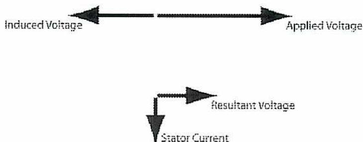
The diagram shows three vectors originating from a common point. A horizontal vector pointing to the right is labeled 'Applied Voltage'. A horizontal vector pointing to the left is labeled 'Induced Voltage'. A vertical vector pointing downwards is labeled 'Stator Current'. A diagonal vector pointing up and to the right is labeled 'Resultant Voltage'. The resultant voltage vector is the vector sum of the applied voltage and the induced voltage.
Figure 42
No-load Conditions
When load is applied, Fig. 43, the salient rotor pole will still rotate at synchronous speed but the pole face will be slightly displaced from the stator pole. This creates torque and the induced voltage will no longer be \( 180^\circ \) out of phase with the applied voltage. This
creates a resultant voltage, which causes more current to flow in the stator. Again, the current will be \( 90^\circ \) out of phase with resultant voltage and a certain phase angle out of phase with applied voltage.
![Figure 43: Phasor diagram showing the application of a load. The diagram features four vectors originating from a common point. 'Applied Voltage' is a horizontal vector pointing to the right. 'Induced Voltage' is a vector pointing up and to the left. 'Resultant Voltage' is a vector pointing up and to the right, forming a parallelogram with 'Applied Voltage' and 'Induced Voltage' via dashed lines. 'Stator Current' is a vector pointing down and to the right. The angle between 'Applied Voltage' and 'Stator Current' is labeled 'Phase Angle'.](b05fbb6a015ea153c1e25245772b1a1b_img.jpg)
Figure 43
Application of a Load
If the salient-pole DC winding of the rotor is supplied with more current (Fig. 44), it is said to be overexcited. More current in the rotor winding will strengthen the rotor magnetic field, which results in more induced voltage in the stator.
![Figure 44: Phasor diagram showing the addition of current. The diagram features four vectors originating from a common point. 'Applied Voltage' is a horizontal vector pointing to the right. 'Induced Voltage' is a vector pointing up and to the left. 'Resultant Voltage' is a vector pointing up and to the left, forming a parallelogram with 'Applied Voltage' and 'Induced Voltage' via dashed lines. 'Stator Current' is a vector pointing up and to the right, leading the 'Applied Voltage' vector. The angle between 'Applied Voltage' and 'Stator Current' is labeled 'Phase Angle'.](e95f47f7a4c01c8889d6d46919b4c73d_img.jpg)
Figure 44
Addition of Current
The resultant voltage and stator current are shown. The stator current is now leading the applied stator voltage. The kvars produced by the over-excited stator are supplied to the system which helps reduce a lagging system power factor.
Advantages
The advantages of synchronous motors are:
- • higher efficiency
- • high pull-out torque
- • ability to carry load at unity power factor, and if required, to supply reactive kVA for system power factor correction by operating at a leading power factor
Disadvantages
The disadvantages of synchronous motors are:
- • low starting torque
- • relatively high cost of manufacture
- • A separate DC supply must be provided. The DC may be supplied through sliprings and brushes and the possibility of sparking may be objectionable in certain locations.
Chapter Questions
B3.4- 1. Describe the principle of induction and the development of torque for a squirrel-cage rotor.
- 2. What is another name for the end rings of a squirrel-cage rotor?
- 3. What construction technique is used to reduce eddy currents in the rotor of AC induction motors?
- 4. What is the speed of a 60 Hz synchronous motor?
- 5. What is the FLA of a motor and name one common place to find the “FLA” of a motor?
- 6. What is the effect upon torque when rotor resistance is increased in a wound rotor motor?
- 7. What type of single-phase motor works with both AC and DC?
- 8. Match the following motors with the correct characteristic.
| Motor: | Characteristic: | |
|---|---|---|
| Universal ( ) | (a) | The expanding and collapsing magnetic field produced from the applied AC voltage produces a sweeping effect across the pole face, which causes the rotor to turn. |
| Single phase ( ) | (b) | Uses a capacitor to achieve a phase angle between the start winding and the run winding. |
| Shaded-pole ( ) | (c) | This design makes the current in the start winding differ in phase from the current in the run winding. This is achieved by designing the two windings with different characteristics. |
| Three phase ( ) | (d) | Uses a rotating stator magnetic field. |
| Capacitor start ( ) | (e) | The armature winding is in series with the field winding |
| Split-phase ( ) | (f) | Uses a pulsating stator magnetic field. |
- 9. What type of AC motor can be used for power factor correction?
- 10. What does it mean when a motor is “started across the line”?
- 11. What is the approximate inrush, or starting, current for an AC induction motor?